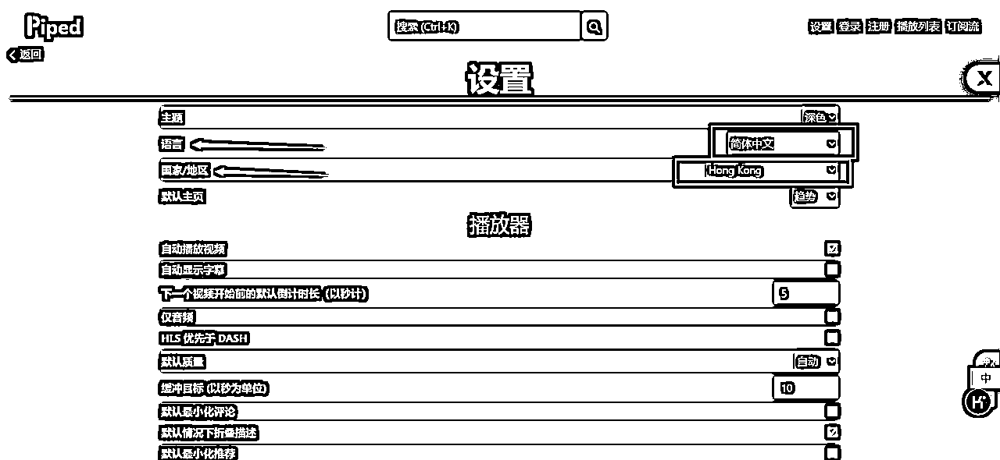
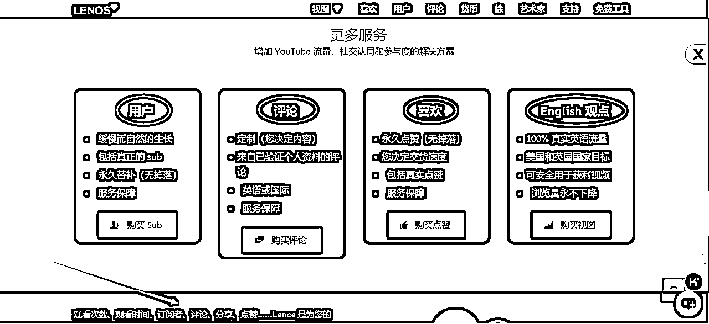

来源：https://o1xdfcjcp5c.feishu.cn/docx/Xfgkd9hjnoXOsoxAimFc9ZxCnGg
✊️🆚🗡
耍拳的难敌用刀的，用刀的难敌扛枪的，这就是“器”的加持作用
器的本质是提高我们做事的效率，效率，一为效果，二为速率
🚀🚀🚀
我是超人，在过去创业的十六年里，我素有收集工具的习惯，也整理了不少的工具，但一直犹豫要不要分享。
一方面是因为这里面很多都是多年前收集的工具，怕时效性不好，而且很多工具已经下线或不能用了；另一方面，对于当下很火的自媒体和 AI 类工具又还没来得及整合进去，所以……
但回头一想，其实这也是一个难得的机会，可以借此机会逼自己把这些工具好好梳理一下，如果还能顺带给圈友或其他人带来一些价值，那怎么看都不是坏事！
于是我花了将近一周的时间，把之前收集整理的工具都重新过了一遍，把那些已经下线或不合时宜的工具删掉（这个工作完成了），然后补充一些新的工具（这个工作还要继续……），免费分享出来。
这个工具库我将持续更新维护，如果有发现错误或问题，请留言或私信告诉我进行删除或修正，谢谢～
如果觉得有用，烦请点个赞支持下，谢谢～
想要进一步了解和链接我，这是我的个人说明书：
工具的组织分类我主要依据两条线，一条是不同的事业阶段，一条是工具使用的场景。
事业阶段主要分四个阶段：学习、打工、创业/副业、投资。每个阶段对于工具的需求肯定也是不同的，比如学习阶段需要知识的管理，打工阶段需要提效率做好执行……等等。
抛开场景去聊工具是没有意义的，工具就是要用来帮助我们解决具体问题的，而一个工具的功能也不可能是单一的，不同的功能适用于不同的场景，比如 5118 这个工具，功能非常多，那就要根据不同的场景、需求来选择和使用，所以在阶段下面，我又根据不同的需求/使用场景来进行分类整理。
当然了，分类只是为了更快地找到并正确地使用工具，不必太在意某个工具是否应该分在哪个类别，只要在遇到问题时能想到应该用什么工具就 ok 了。
具体到某个工具条目，目前主要给出工具名称、简介、网址、图片等基础信息，后续会逐渐增加一些工具的使用场景、案例、方法等深度信息，敬请关注。
最后，还有很重要的一点，工具的目的是帮助我们提高学习、工作、创业、投资的效率，在精不在多，所以我看重的是工具的实际使用场景和效果，是为了筛选而不是求大全，不是做工具软件的聚合笔记，后续我会持续删除一些不合时宜，难用没用的工具。
工具名称旁的标志说明（该项工作还在进行中）：
👍️ → 个人推荐
🕸️ → 科学上网
💰️ → 付费使用
🔤 → 纯英文站
PS：如果部分网站直接点击飞书內的链接无法打开，可直接复制网址到浏览器里打开试试，特别是国外的网站。
（1) Zlibrary👍️🕸️
提供免费电子书和文档资源的在线图书馆，拥有超过 1200 万本书籍和 8400 万篇文章，覆盖文学、历史、科学等多个领域，支持包括中文在内的 28 种语言，方便全球用户使用，大部分资源可以免费下载，且无需注册即可使用，同时支持多种搜索条件和过滤选项，如标题、作者、ISBN 等，帮助用户快速找到所需资源。缺点是需要翻墙才能使用。
网址：
（2）安娜的档案👍️🕸️
一个非营利性的开源搜索引擎，旨在通过整合包括 Z-Library、Library Genesis 和 Sci-Hub 在内的多个资源库，为用户提供一个全面的免费电子书、论文、漫画和杂志资源平台。汇集了超过 40 万本电子书，包括书籍、论文、漫画和杂志等，覆盖广泛的学习、工作和娱乐需求。用户可以在无需登录的情况下无限制地下载各种中英文书籍、期刊和书评，免费获取大量文献资源。同样需要翻墙。
网址：
（1）鸠摩搜索👍️
一个专注于电子书和文档搜索的垂直搜索引擎，它通过整合来自多个平台的资源，如淘宝、豆瓣、百度文库、百度网盘等，为用户提供了一个方便查找论文学习资料、古籍资料以及不同电子商务平台的购买比价信息的平台。
网址：https://www.jiumodiary.com/
（2）文献小镇
这是一款集国内外文献查询于一体的综合性文献搜索网站，里面包含了多个SCI-HUB、Google的镜像网址，还有国内文献、百度文库、知网文库等超多、超全文库，还有超多备用链接，总有一款适合你！
网址：www.sci-hub.ac.cn
（3）PDF 书籍下载
城通网盘 PDF 电子书，适合在电脑阅读。
按中图法进行分类：https://n459.com/dir/4105743-11334675-d9559b
按拼音字母进行分类（密码：576196）：https://url36.ctfile.com/d/4204636-30731937-3f352e
百度网盘
（1）学霸盘
网址：https://www.xuebapan.com/
（2）熊猫搜盘
网址：https://www.sopandas.cn/
（3）兄弟盘
网址：https://xiongdipan.com/
（4）热盘搜
网址：http://www.repanso.com/
阿里云盘
（1）up 云搜
不限速，资源全。
网址：https://www.upyunso.com/
（2）猫狸盘搜
网址：https://www.alipansou.com/
其他
（1）趣盘搜
夸克网盘搜索平台。
网址：https://pan.funletu.com/#/
（2）迅极搜
迅雷网盘搜索平台。
网址：https://xunjiso.com/
（3）PanSearch
多平台网盘聚合搜索，广告有点多，但免费，所以……
网址：https://www.pansearch.me/
（1）微信读书💰️👍️
我目前唯一在用的读书工具，买了连续包年会员（168元/年），书籍多，想看的基本都有，没有的也可以在网上找后导入，支持多种电子书格式，还能听有声书，伴睡必听。
网址：https://weread.qq.com/
（2）知识星球💰️👍️
我目前唯一在用的知识付费工具，主要是获取互联网创业项目相关的资讯，学习AI技能等，付费加入一些高质量的星球，哪怕获取第二、三手的资讯，也是很有价值的。
网址：https://www.zsxq.com/
（3）飞书-飞行社👍️
我目前主要用飞书做知识管理，而飞书里有个飞行社板块，里面有很多官方和第三方分享的高质量知识库、模板、课程等。
网址：https://www.feishu.cn/community
（4）秘塔AI-今天学点啥👍️
一款基于自然语言处理与多模态生成技术的智能学习工具，可将任意网页或链接（如PDF、Word、行业报告、学术论文等）快速转化为结构化课程，支持个性化定制与沉浸式学习。该功能打破传统学习的信息筛选与理解壁垒，将专业内容转化为“讲解+动画+测试”的完整体系，10分钟内即可完成知识消化，尤其适合职场人、创业者等急需快速掌握实用技能的场景。
推荐理由：
网址：https://metaso.cn/study
参考：秘塔AI连夜上架新功能！每天30分钟，专治收藏癖、拖延癌，逼你1年榨干1000本书！
（5）Zread.ai👍️
专门用来解读GitHub上的开源项目——Zread.ai，简直是学习技术的神器。以前去GitHub上看AI项目，全都是英文让我头大。现在有了这个工具，只需要把项目链接丢给它，几分钟后它就能生成一份详细的中文指南。除了解读开源AI项目，它还能用来解析AI开源大模型，还能分析私有仓库，完全可以用来做项目交接和沉淀。最后，它还有一个超酷的功能，就是主页搜索框下面的【探索本周的热门仓库】，这里展示了每周最火的开源项目，点击某个项目后，展示的是已经生成好的项目指南，关于项目的信息都已经整理好了！
网址：https://zread.ai/
（1）网易公开课
免费开放的在线学习平台，旨在提供来自全球名校、教育性组织和可汗学院等的高质量课程视频，内容涵盖人文、社会、艺术、科学、金融等多个领域。
网址：https://open.163.com/
（2) TED👍️🔤
一个非营利性的组织，致力于分享那些能够激发思考、推动创新和改变世界的想法，其演讲涵盖了科技、设计、商业、教育等多个领域，为观众提供了独特的洞见和启发，促进了知识的跨界交流。
网址：https://www.ted.com/
我大学是学计算机的，所以对计算机类的书籍比较关注，现在进入 AI 时代，如果掌握一定的计算机知识，会对我们理解和应用 AI 有更多的帮助。
（1）免费的编程中文书籍索引（Github）
网址：https://github.com/tianyuan881214/free-programming-books-zh_CN
（2）自学计算机科学指南（Github）
网址：https://github.com/izackwu/TeachYourselfCS-CN/blob/master/TeachYourselfCS-CN.md
（3）免费计算机书籍汇总（Github）
网址：https://github.com/ruanyf/free-books/blob/master/README.md
（4）搬书匠
计算机相关书籍。
网址：http://www.banshujiang.cn/
（1）心情
专注于心理学入门与自我成长，无论打工还是创业，能看懂、看透人的心理是一个很重要的技能。
网址：http://www.ixinqing.com/
（1）UDACITY🔤
从入门到高级，英文（可借助网页翻译工具，如【沉浸式翻译】），网站打开有点慢。
网址：https://www.udacity.com/school/artificial-intelligence
（2）Google AI🕸️
Google AI 学习平台，英文，需翻墙。
网址：https://ai.google/
（3）Coursera
知名的 MOOC 平台（提供大型开放式网络课程的平台），有众多的人工智能和机器学习课程。
网址：https://www.coursera.org/courses?query=artificial%20intelligence
（4）Elements of AI🔤
由 MinnaLearn 和赫尔辛基大学创建的一系列免费在线课程。希望鼓励尽可能多的人了解 AI 是什么，AI 可以（和不能）做什么，以及如何开始创建 AI 方法，英文。
网址：https://www.elementsofai.com/
（5）阿里云-人工智能学习路线
阿里云推出的人工智能课程，以学习路线的方式来组织，一共 5 大阶段，30 门课程，424 课时，第一第二阶段全免费学习，后面三个阶段的课程需要付费，9.9 元一门。
网址：https://developer.aliyun.com/learning/roadmap/ai
（6）AI 大学堂
科大讯飞推出的 AI 大学堂，免费学习。
网址：https://www.aidaxue.com/
（7）ShowMeAI
人工智能领域的资料和学习社区，中文。
网址：https://www.showmeai.tech/?ref=ai-bot.cn
（8）pp 飞桨-Ai Studio
中文的人工智能学习训练社区。
网址：https://aistudio.baidu.com/overview
( 1) Machine Learning Mastery🔤
从基础到高级的在线【机器学习】课程，英文。
网址：https://machinelearningmastery.com/start-here/
( 2) kaggle🔤
【机器学习】和【数据科学】的学习论坛，英文。
网址：https://www.kaggle.com/
( 3) Microsoft | Open Source🔤
微软推出的免费开源的【机器学习】课程。
网址：https://opensource.microsoft.com/
( 4) fast.ai🔤
免费开源的【深度学习】网站，英文。
网址：https://www.fast.ai/
（5）动手学深度学习
支持中文的【深度学习】教材和课程。
网址：https://zh.d2l.ai/
( 5) Brilliant🔤
【神经网络】入门，英文。
网址：https://brilliant.org/courses/intro-neural-networks/
（1）提示工程指南
免费开源的提示工程指南，中文。
网址：https://www.promptingguide.ai/zh
( 2) Learning Prompt
免费的 Prompt Engineering 教程，现已包含 ChatGPT 和 Midjourney 教程，支持中文。
网址：https://learningprompt.wiki/zh-Hans/
( 1) Scikit-learn🔤
Python 的机器学习/知识库。
网址：https://scikit-learn.org/stable/index.html
( 2) NumPy🔤
Python 科学计算必备包。
网址：https://numpy.org/
( 3) NLTK🔤
Python 自然语言处理工具包。
网址：https://www.nltk.org/
（4）华为昇思 MindSpore
华为开源自研 AI 深度学习框架。
网址：https://www.mindspore.cn/
获取实时动态与行业趋势，适合想及时掌握AI热点的小伙伴。
（1）TechURLs
这是一个超全的科技新闻“聚合器”！把Hacker News、Reddit/tech这些海外大媒体的内容一网打尽，还能用关键词（比如“AI”“大模型”）精准筛选。
推荐理由：想蹲第一手海外AI资讯？无需特殊网络配置（你懂得），中文媒体很多内容都从这儿“搬运”的！
网址：https://techurls.com/
（2）机器之心
这是中文AI领域的“翻译官+解说员”，既编译国外高质量文章，又自己产出深度分析，技术解读、行业报告、会议资讯全都有。
推荐理由：读英文头大？来这里快速get技术怎么落地！比如“AI怎么帮医院读CT片”，讲得明明白白～
网址：https://www.jiqizhixin.com/
深度分析与行业洞察，适合想看懂AI商业化的投资人&创业者。
（1）A16Z（Andreessen Horowitz）
这是 硅谷顶级风投的“AI观察日记”，内容从技术趋势到创业生态，甚至长期关注AI+Web3这种未来组合！
推荐理由：长期追更，你也能像风投大佬一样思考！中文圈好多文章都引用它，含金量你懂的～
网址：https://a16z.com/ai/
（2）Sequoia Capital
这是全球顶尖风投的“行业透视镜”，报告里全是硬货：AI技术演进、商业化路径、投资逻辑……还拿自家投资的公司当案例！
推荐理由：想知道资本怎么评估AI项目？比如“技术壁垒够不够高”“产品能不能卖出去”？答案都在这儿！
网址：https://www.sequoiacap.com/article/tag/ai/
技术落地与工具应用，适合想找AI工具的产品经理、开发者、投资人。
（1）Toolify.ai
这是AI工具版的“大众点评”，实时更新排行榜（收入、流量啥的），新出的AI产品一目了然～
推荐理由：想找下一个“ChatGPT级”的神器？来这里挖宝就对了！
网址：https://www.toolify.ai/zh/
（2）AIBase
这是AI界的“瑞士军刀”，新闻、工具榜、开源项目全都有，还能中英文切换！
推荐理由：一站式解决“学AI用什么工具”“怎么找开源代码”这种头疼问题～
网址：https://www.aibase.com/zh
（3）Product Hunt
这是全球新产品的"首发秀场"！每天更新最酷的AI应用、SaaS工具，从开发框架到终端应用应有尽有。
推荐理由：Midjourney、Notion AI这些爆款在没火之前就在这里亮相；看用户真实评论，秒懂产品痛点（比如"这个AI写作助手生成的文案太生硬"）；适合创业者验证idea，投资人挖掘潜力股！
网址：https://www.producthunt.com/
（4）GitHub Topics/Trending
这是程序员的"潮流风向标"，专门追踪最火的AI开源项目！
怎么用最爽？关注#ai和#ml标签，发现像Stable Diffusion这样的神级项目，直接看代码、提issue，参与项目开发，很多论文的复现代码都第一时间po在这里！
推荐理由：想站在AI技术最前沿？这里就是你的"军火库"！
https://github.com/topics/ai
https://github.com/topics/ml
https://github.com/trending
小贴士：
结构化学习与学术资源，适合想系统学AI的学生、研究者、工程师。
（1）🌈通往AGI之路
这是一群AI大神共建的“开源知识库”，从入门到进阶，工具、案例、实战全包了！
推荐理由：无论你是小白还是专家，这儿总有一款干货适合你～
网址：
https://www.waytoagi.com/zh
https://waytoagi.feishu.cn/wiki/QPe5w5g7UisbEkkow8XcDmOpn8e
（2）arXiv（AI相关领域）
这是AI论文的“早鸟站”！机器学习、NLP、计算机视觉的最新研究，都第一时间发在这儿。
推荐理由：搞科研的必备！搭配Papers With Code，连代码都能直接复现～
网址：https://arxiv.org/list/cs.AI/recent
（3）Papers With Code
这是论文党的"救命神器"！把最新AI论文和对应的代码、数据集打包好，一键直达GitHub。
推荐理由：再也不用对着论文干瞪眼（代码跑不通的痛苦你懂的😂），覆盖CV、NLP、强化学习等所有AI子领域，实验结果直接对比，省去重复造轮子的时间！
网址：https://paperswithcode.com/
（4）李宏毅《生成式AI导论2024》
这是台大李宏毅教授的"生成式AI百科全书"，从Diffusion模型到Sora原理全讲透！
课程亮点：数学推导+代码演示+产业案例三合一（比如解析Midjourney的技术方案），中文授课！对英语苦手特别友好！模块化设计，可以按需跳着学。
适合谁：想深入理解生成式AI的开发者/产品经理。
课程地址：
YouTube频道：https://www.youtube.com/@HungyiLeeNTU
B站：https://www.bilibili.com/video/BV1BJ4m1e7g8/?vd_source=fd7d12daecd42528100b362cd938823c
（5）吴恩达《Generative AI for Everyone》
这是AI教父吴恩达给非技术人士的"6小时速成课"！
学完能干嘛？看懂ChatGPT的企业级应用，用"AI机会评估矩阵"给业务做诊断，避开生成式AI的常见坑（比如法律风险）……
推荐理由：时间紧任务重？这门课就像"AI知识压缩包"！
课程地址：
课程官网：https://www.deeplearning.ai/courses/generative-ai-for-everyone/
Coursera：https://www.coursera.org/learn/generative-ai-for-everyone
学习路线建议：
（1）Get笔记👍️
得到推出的免费AI实时语音转文字小程序。具备高准确率的语音识别技术，帮助用户将语音快速转换为文本，提供文本润色功能，优化笔记内容。用户界面简洁，易于上手，支持录音和文字保存，以及时间轴展示，方便管理和回顾。适用于工作记录、学习笔记和个人备忘等多种场景，提高记录效率，随时随地捕捉灵感。目前完全免费，无使用次数限制。
（2）NotebookLM🕸️
谷歌推出的一款AI笔记应用，基于大型语言模型(LLM)帮助用户管理和吸收信息。用户可以上传文档、链接和文本，NotebookLM能理解内容并生成摘要、回答提问，提出创造性想法。最新功能能将上传的内容转换成一段对话播客，通过一男一女两位虚拟主播的对话，提供一种新的信息消费体验。
网址：https://notebooklm.google/
参考：自媒体高手和素人之间，也许就差了一个这样的AI笔记神器！
（1）飞书-知识库👍️
飞书是字节跳动推出的企业级协作与管理平台，整合了即时沟通、在线文档、云端存储、视频会议、项目管理、审批流程等功能，旨在提升团队协作效率与知识管理能力，目前也是我做知识管理的第一选择。
推荐理由：
官网：https://www.feishu.cn
国际版（Lark）：https://www.larksuite.com
飞书知识库常见问题：https://open.feishu.cn/document/server-docs/docs/wiki-v2/wiki-qa
（2）印象笔记（Evernote）
全球知名的个人及团队知识管理工具，专注于信息收集、整理、存储与检索，帮助用户构建个人知识库，支持从碎片化信息到系统化知识的高效管理。在飞书之前我用的就是印象笔记，飞书出来后，我还是觉得飞书好用些。
推荐理由：
官网（中国版）：https://www.yinxiang.com
国际版（Evernote）：https://www.evernote.com
（3）Notion
一款高度灵活的一体化协作工具，结合了笔记、数据库、任务管理、知识库、项目管理等功能，支持个人和团队构建定制化的工作空间，被称为“All-in-One”生产力平台。Notion将是我后续用来做付费知识库的首选工具。
推荐理由：
官网：https://www.notion.so
（4）腾讯AI智能工作台（ima.copilot，简称IMA）
IMA是腾讯推出的AI原生智能工作台，以“个人知识库+AI搜读写”为核心，整合全网信源、本地文件管理与大模型能力，覆盖学术研究、职场办公、教育管理等场景，目标是成为用户的“第二大脑”。
推荐理由：
官网：https://ima.qq.com
开发者社区介绍：腾讯云开发者社区
（5）腾讯元器
基于腾讯混元大模型的一站式AI智能体开发平台，其独特价值在于零代码/低代码可视化开发能力，整合了插件扩展、知识库管理、工作流编排三大核心功能，支持快速构建企业级智能客服、个人创意机器人等应用。
推荐理由：
官网：https://yuanqi.tencent.com/
1.适用场景与推荐组合
2.避坑指南
3.总结建议
（1） Quicker👍️
一款功能强大的个人自动化工具，可以通过自定义快捷键和宏来自动化重复性任务，从而提升工作效率。它支持 Windows 和 macOS 系统。我最喜欢的效率工具之一！下面就是用了这个软件后我的桌面，Quicker 那个界面只有呼唤才出现。
网址：https://getquicker.net/
（2）Alloy Timer
随开随用的番茄工作法计时器。
网址：https://alloyteam.github.io/AlloyTimer/
（3）Infinity 标签👍️
浏览器插件，可以轻松快捷地添加、管理和访问网站，也是我个人最喜欢的插件工具之一。
网址：https://www.infinitytab.com/zh/
（4）Xmind👍️
一款全功能的思维导图和头脑风暴软件，可以用来辅助思考，组织思路，制作各种思维导图，是我平时用得较多的软件之一，免费版基本就能满足日常使用。
网址：https://xmind.cn/
（5）Workrave
一个免费程序，可帮助恢复和预防重复性劳损 （RSI）。它会监控你的键盘和鼠标使用情况，并使用这些信息，经常提醒你进行微休息、休息，并可以限制每天使用计算机的时间。
网址：https://workrave.org/
（1）habitica
Habitica 是一款帮助你改善现实生活习惯的游戏。它通过将你所有的任务（习惯，日常任务和待办事项） 变成你需要打败的小怪物来“游戏化”你的生活。你在生活中做得越好，你在游戏中的进步就越大。如果你在生活中犯了错误，你的角色也会在游戏中退步。
网址：https://habitica.com/static/home
（2）时光序👍️
一款集多功能于一体的效率管理类App，功能很丰富实用，我一直在用，之前买的终身VIP好像是99元（现在好像不止了……）。
网址：https://www.shiguangxu.com/home
（3）DaysMatter 倒数日
一款专注于记录重要日子的工具类App，通过直观的倒计时/正数计时功能，帮助用户管理纪念日、截止日期、节日等。免费用户可添加的事件数量有限（约10-20个），更多分类、自定义背景等功能需升级Pro会员（订阅制，约30元/年）。
网址：https://app.ipad.ly/idays
（4）Timely🔤
AI 时间管理跟踪软件。
网址：https://timelyapp.com/
（5）计次郎
苹果手机APP，简洁好用的打卡计数器，可以管理一件事做过几次，也可以管理还剩几次。
网址：https://apps.apple.com/cn/app/%E8%AE%A1%E6%AC%A1%E9%83%8E-%E5%88%86%E4%BA%AB%E8%AE%B0%E5%BD%95%E6%AF%8F%E4%B8%80%E6%AC%A1/id1598602354?platform=iphone
（1）万彩办公大师
免费办公工具软件超级套装，几乎可以满足日常各种办公工具需求，它内置了 60 多款强大的，无任何广告及插件的绿色办公组件，如 PDF 工具集（PDF 转换（PDF 转 Word/Excel/PPT， PDF 合并分割水印）；文档/音视频/图片转换工具集；OCR 工具集；屏幕录制工具集；图片处理工具集；文件处理工具集等。所有的套装工具不需要安装，直接可以绿色加载启动。
网址：https://www.wofficebox.com/
( 2) Convertio👍️
在线万能文件转换工具，支持超过 300 种不同的文件格式间超过 25600 种不同的转换方式，且不需要下载和安装任何软件，非常强悍。
网址：https://convertio.co/zh/
( 3) Everything
找文件飞快。
网址：https://www.voidtools.com/zh-cn/
（4）楼月微信聊天记录导出恢复助手👍️
一个很牛逼的微信内容保存工具，可以恢复自己误删除的微信聊天记录、将微信聊天记录导出html格式、在电脑上查看所有文字，语音聊天内容、支持所有苹果手机及安卓手机！
网址：http://louyue.org/weixin.htm
（1）红手指云手机
一款基于云端虚拟化技术的手机模拟器工具，主打24小时在线托管、多账号管理、应用挂机运行等功能，尤其受手游玩家、社交营销等用户群体关注。
网址：https://www.gc.com.cn/
（2）向日葵
一款由国内贝锐科技开发的跨平台远程控制工具，支持Windows、macOS、Linux、Android、iOS等多种设备互联，适用于远程办公、技术协助、设备运维等场景。
免费版：基础远程控制、1对1连接、300KB/s带宽（日常办公够用，但帧率受限）。
搭配“开机棒”硬件可实现远程开机。
网址：https://sunlogin.oray.com/
（1）影刀
办公自动化效率神器，无需编程，支持手机、电脑、网页的自动化操作，可以解决那些需要重复操作的工作，比如批量操作AI写文章，自动发视频，统计每天的销售数据等等，凡是有规律可循的操作，基本都能胜任。使用上有点门槛，需要花时间去学习一下官方教程，如果不想自己研究，也可以找某鱼、某宝上的接单高手，谈好需求和价格，能节省不少功夫。
网址：https://www.yingdao.com/
（1）DeekSeek👍️
DeepSeek推出的DeepSeek-V3模型，以其高达6850亿参数的混合专家（MoE）架构，在多项基准测试中表现出色，甚至在部分测试中超越了OpenAI的GPT-4o等主流闭源模型。DeepSeek的编码服务高效智能，能够自动生成高质量的代码，大幅提高开发效率。此外，DeepSeek坚持开源策略，为开发者提供了更广阔的探索空间，展现了其推动人工智能和编码技术进步的决心和实力。
网址：https://www.deepseek.com/
（2）天工 AI
由昆仑万维集团开发的人工智能助手，通过深度学习和自然语言处理技术，能够理解用户的自然语言意图，并提供高效、精确的信息检索服务。其独特的算法与机器学习模型深度融合，使得天工AI在处理复杂任务时表现出色，响应速度快且结果准确。天工AI还支持创建个性化的智能体，满足用户多样化的需求。
网址：https://www.tiangong.cn/
（3）秘塔AI搜索
秘塔AI搜索通过深度理解和精准搜索，为用户提供毫秒级的响应速度和无广告的高质量答案。它不仅能够快速整合互联网上的最新资讯与动态，还能根据用户需求生成结构化的信息展示，包括思维导图、内容大纲等，帮助用户快速掌握信息要点。秘塔AI搜索还支持多语言文本生成，满足国际化业务和多语种创作的需求。
网址：https://metaso.cn/
（4）Monica👍️
一站式 AI 助手，应该是目前最好用的AI聚合工具，不需要复杂的API获取步骤，直接开通会员后，可以使用目前主流的各种AI对话模型，包括 OpenAI o1、GPT-4o、Claude 3.5 和 Gemini 1.5，来提升聊天、搜索、写作和编程体验，可作为 Chrome 和 Edge 浏览器扩展使用，也提供移动端和桌面端应用程序，比单独购买所有AI平台的会员要划算很多，并且可以避免因为IP等原因造成的封号问题。
网址：https://monica.im/
（5）Cherry Studio
开源的本地AI聚合工具，可以直接调用各大AI模型的API，不用来回在各个AI网站跳转，并且支持本地知识库功
能。好处是按照使用量付费，而不是会员制，但是需要手动去获取各个平台的API，适合喜欢折腾的用户。
网址：https://cherry-ai.com/
（1）沉浸式翻译👍️
很特殊的 AI 产品，浏览器插件，非常棒的小工具，完全免费地使用它来实时翻译外语网页，PDF翻译，EPUB电子书翻译，视频双语字幕翻译等，还可以自由选择调用DeepL、Gemini等人工智能引擎来翻译上述内容。
网址：https://immersivetranslate.com/zh-Hans/
（2）DeepL👍️
一款由德国AI创业公司DeepL GmbH开发的翻译软件，采用了先进的神经网络技术，通过模拟人脑神经元的工作原理，建立深度神经网络，实现对各种语言的准确翻译。其翻译质量广泛被认为是当前机器翻译技术中最佳的之一，能够捕捉语言的细微差别，生成更自然、更准确的译文。此外，DeepL支持多种语言的互译，并在不断扩展其语言库，无论是处理专业术语、技术词汇，还是理解上下文语境，DeepL都能表现出色。
网址：https://www.deepl.com/zh/translator
以下是DeepL和沉浸式翻译的对比列表：
( 1) Formularizer🔤
输入描述（想要进行的数据处理操作），AI 就辅助生成能实现描述任务的 excel 公式。
网址：https://formularizer.com/home
( 2) FormX.ai
可以自动从表格和文档中提取数据。
网址：https://www.formx.ai/
( 3) ChatExcel
北大开发的 AI 工具，可以通过与 AI 聊天的方式来处理 Excel 表格数据。
网址：https://chatexcel.com/#/home
( 4) Ajelix
处理 Excel 和 Google Sheets 表格的 AI 工具，比如将 excel 数据做可视化处理等。
网址：https://ajelix.com/
( 1) SlidesAI
快速创建 PPT 的 AI 工具，支持 100 种语言。
网址：https://www.slidesai.io/zh
( 2) Gammas
AI 智能 ppt 生成工具，允许用户通过输入主题或提示来快速生成完整的演示文稿、文档或网站，提供多种模板，支持图片、视频和嵌入网页等多种内容形式，支持中文、法语、德语等多种语言。
网址：https://gamma.app/
( 3) Tome
Tome 是一款由 AI 驱动的演示工具和商业沟通平台，旨在帮助用户快速创建和分享完整的叙事内容。提供多种模板，涵盖从筹款演示到简历的各种用途，可根据用户输入的提示词，自动生成包括标题、大纲、内容和配图的完整 PPT。
网址：https://tome.app/
( 4) auxi
PowerPoint AI 插件，可以自动辅助生成 PPT 文案内容。
网址：https://www.auxi.ai/
（5）美图设计室 LivePPT
美图公司旗下的一款基于人工智能技术的 PPT 制作工具，用户只需提供一个主题或一段文本，AI 技术就能自动生成包含 16-30 页的 PPT 大纲和内容，具体页数可选，支持多种格式下载，包括 PPT、PNG、JPG、PDF。
网址：https://www.designkit.com/ppt/?from=home
( 6) ChatPPT
必优推出的中文 AI 生成 PPT，用户只需输入关键词或上传文档，即可智能生成 PPT 大纲，并自动填充相关素材，生成高质量的专业演示文稿 PPT，提供海量优质 PPT 模板库，涵盖商业计划、工作总结、教育培训、学术报告等各种类型，搭载自研的图笏模型（Tuhu），能基于用户 PPT 文件内容进行 PPT 设计美化，支持页面级内容美化和元素级美化。
网址：https://chat-ppt.com/
（1）讯飞会议
讯飞推出的智能会议系统，实时字幕，实时翻译，自动生成会议记录。
网址：https://meeting.iflyrec.com/
（2）麦耳会记
AI 会议助手，语音转文字、字幕同传、AI 摘要。
网址：https://work.duiopen.com/#/home
（3）通义浏览器插件
能够实现会议沟通实时转文字和翻译，并且在会后进行议程、发言、待办总结，帮助用户记录会议细节并高效回顾，轻松完成会议纪要的撰写。同时，还支持将会议记录分享给同事，信息传递无损且高效。
网址：https://tingwu.aliyun.com/home
（4）飞书妙记👍️
自动把视频会议转录成易搜索、有整理、可翻译的逐字稿，且支持在线评论、@ 同事，更有智能会议纪要，能自动总结会议纪要与待办，大幅提升回顾和协作效率。
网址：https://www.feishu.cn/product/minutes
（1）Make🔤
一款强大的在线自动化平台，允许用户通过简单的拖放操作，将不同的应用程序和服务无缝地连接在一起，创建复杂的自动化工作流程。
网址：https://www.make.com/en
（2）Zapier🔤
国外最为知名和流行的自动化集成平台，该平台提供各种基于网络应用的流程自动化集成服务，用户只需描述想要自动化的内容，其 AI 工具便会自动创建步骤、编写代码并构建 Zaps 应用。
网址：https://zapier.com/
（3）n8n
一款开源的工作流自动化平台，可通过可视化节点拖拽实现跨系统集成与数据处理。
推荐理由：
网址：https://n8n.io/
（1）boardmix
国内前沿的在线协作白板工具，集成了AI、思维导图、流程图、PPT、文档笔记和看板等创作能力，打通成员之间进行灵感采集、思考、创作、管理、演示、协作的全链路。也可以当白板用，录制PPT、讲解类视频教程。
网址：https://boardmix.cn/ai-whiteboard/
（2）Pixso
产品设计协同工具，解决设计工具分散，设计语言难统一等问题，为企业信息安全提供强有力的保障，可大幅提升产设研团队协作效率，保障企业资产安全。也可以当白板用，录制实操类视频教程。
网址：https://pixso.cn/
（1）百度网盘云一朵
百度网盘智能助手（测试中），可以根据网盘内的文档回答问题，总结文档大意，聊天等，如果网盘里有很多保存了却许久没打开的学习资料，这个功能就能发挥大作用了。
网址：https://pan.baidu.com/aipan/welcome
（2）Umi-OCR 文字识别工具
开源、免费的离线 OCR 软件。支持截屏/批量导入图片，PDF 文档识别，排除水印/页眉页脚，扫描/生成二维码。内置多国语言库，需翻墙。
网址：https://github.com/hiroi-sora/Umi-OCR
（1）小众软件
这是一个分享免费、小巧、有趣、实用软件的网站，可以发现各种各样的软件，有实用的，有趣味的，有奇葩的，任何存在的软件都是需求的表现。广告会比较多，毕竟免费……
网址：https://www.appinn.com/
( 2) Product hunt
挖掘国外最新软件。
网址：https://www.producthunt.com/
（3）软仓
软件仓库，包含 Adobe、CAD、平面设计、三维设计、影视动画、建筑设计、机械设计、电子电器等专业软件。
网址：https://www.ruancang.net/
( 4) 423Down
PC、安卓软件下载。
网址：https://www.423down.com/
（5）马可菠萝
Mac 平台软件下载。
网址：https://www.macbl.com/
（1）五百丁简历
一站式搞定简历制作。
网址：https://www.500d.me/
（2）牛客-知页简历
网址：https://www.zhiyeapp.com/
（3）极简 polebrief
网址：https://www.polebrief.com/index
（4）职徒简历
智能简历制作软件，基于 GPT 的优化。
网址：https://www.52cv.com/
（1）电商人才网
专注于电子商务领域人才招聘的平台。
网址：https://www.dianshangren.cn/
（2）拉勾招聘
专注于数字科技领域人才招聘的平台。
网址：https://www.lagou.com/wn/
（3）数英
专注于自媒体广告领域人才招聘的平台。
网址：https://www.digitaling.com/jobs
（4）SocialBeta 旗下独角招聘
专注广告与数字营销的垂直招聘网站。
网址：https://socialbeta.com/job
（5）广告门招聘
专注广告与数字营销的垂直招聘网站。
网址：https://www.adquan.com/jobs
（1）风鸟
提供了丰富的功能，如查询公司、老板信息、企业风险、法律文书以及寻找客户等，目前注册就送五年SVIP会员，相当于可以免费使用五年。
直接搜公司名，
网址：https://www.riskbird.com/
（2）爱站网-Whois 查询
有些时候，我们只知道某个的网站，想要应聘网站运营公司岗位，但不知道网站对应的公司名没法天眼查，那就用 whois 查一下，基本就能得到想要的信息。
网址：https://whois.aizhan.com/
（3）国家企业信用信息公示系统
国家权威网站，可查询企业是否有行政处罚信息、列入经营异常名录信息、列入严重违法失信企业名单信息等。
网址：https://www.gsxt.gov.cn/index.html
（4）全国法院被执行人信息查询
国家权威网站，可通过组织机构代码查询企业有没有被执行案件信息。
网址：http://zxgk.court.gov.cn/zhixing/
（1）印象笔记
模板库有很多工作、KPI 管理模板，选择合适的来用就好。
（2）飞书
文档模板有很多工作、KPI 管理模板，选择合适的来用就好。
（1）5118-全网热词👍️
通过全网热词挖掘产品趋势，需要升级专业版。
网址：https://yx.5118.com/traffic/keywordhot
（2）淘商机
通过淘商机获取新产品机会，需要开通淘宝。
网址：https://qn.taobao.com/home.htm/trend-product-operation?from=qngoldslr
（1）第一财经商业数据中心（CBNData）👍️
搜索框中搜行业名，然后重点关注「看点」（行业最新热点）和「报告」（行业最新分析报告）
网址：https://www.cbndata.com/
（2）IT 桔子👍️
搜索框中搜行业名，然后根据左边的信息分别查看
网址：https://www.itjuzi.com/
（3）百度新闻
搜行业名，看同行发的新闻稿，又有了什么创新……
网址：https://news.baidu.com/
（1）新浪微热点
网址：https://www.wrd.cn/home.shtml
（2）微博热搜榜
网址：https://s.weibo.com/top/summary?cate=realtimehot
（3）百度热搜
网址：https://top.baidu.com/board
（1）艾瑞咨询（iResearch）-移动 APP 指数
网址：https://index.iresearch.com.cn/new/#/app/list
（2）Sensor Tower（需翻墙）
网址：https://app.sensortower.com/
（3）移动观象台
网址：https://mi.talkingdata.com/
（4）七麦数据-榜单👍️
查看各种 APP 应用的排行榜，建议选择付费类的，国内和国外都有
网址：https://www.qimai.cn/
https://www.qimai.cn/rank/index/brand/paid/device/iphone/country/cn/genre/5000
（5）Toolify.ai👍️
查看包括谷歌插件、APP 应用等的最新 AI 应用，都是国外的
网址：https://www.toolify.ai/most-saved
（1）站长之家（ChinaZ）👍️
网址：https://top.chinaz.com/
（2）5118-排名大数据内参
网址：https://www.5118.com/baidu/newbest
（1）站长之家- 电商网站排行榜
网址：https://top.chinaz.com/hangyetop/index_shopping_dianshang.html
（2）IT 桔子-电商零售
网址：https://www.itjuzi.com/company?scope=%E7%94%B5%E5%95%86%E9%9B%B6%E5%94%AE&sort=juzi
（1）生意参谋
主要是针对淘宝平台的各种数据：周报、流量/商品/店铺来源、直通车、页面分析
( 1) A5
新媒体资源交易服务平台，账号、商标、网站买卖，自媒体运营服务等。其中有个增粉服务，是通过线下各种细分机器进行吸粉的，比如共享充电宝、WIFI 增粉、支付粉、夹娃娃游戏机、体脂/体重称、共享纸巾、裂变粉、自主售卖机等。
网址：
https://www.a5.cn/
https://xmt.a5.cn/diy/zengfenfuwu.html
（2）流量精灵
主要用于 PC 端，正道是用于优化网站排名的 SEO 工具，邪道则是可用于刷网站流量的刷量工具，需要付费购买积分。
网址：http://www.ipjingling.com/
（3）七七数据
主要提供针对自媒体/电商 APP 的刷量业务，需要充值，需要注意的是，用多少充多少，因为不知道网站哪天就被风控了！
网址：http://hufenge.cn/
（4）短信宝
手机短信服务。
网址：https://www.smsbao.com/
（5）智连代理
IP 地址代理服务，包括动态 IP。
网址：https://www.zhiliandaili.com/
（6）松松软文👍️
全网软文发稿，优化 SEO，打造背书，做信息霸屏。
网址：https://ruanwen.lusongsong.com/
（7）友来多
短信群发平台，仅面向企业、事业单位用户，个人用不了。
网址：https://www.youlaiduo.com/
（8）传播易
广告买卖平台，如果老板不缺钱又想要铺影响力的话……或者用于给甲方提案。
网址：https://www.chuanboyi.com/
（1）选单网
网址：https://www.xuandan.com/
（2）蝉妈妈-商品库
网址：https://www.chanmama.com/promotionRank/?keyword=&has_jx_commission=0
（3）易撰-热销商品榜单
网址：https://zmt.yizhuan5.com/work.html#9-2
（4）壁虎看看-热销商品榜
网址：https://www.bihukankan.com/carrierList/commodity
（5）品牌网
看看各个行业都有哪些品牌，也可以根据品牌名搜索了解品牌情况，对选品也有很大的帮助。
网址：https://www.chinapp.com/
（6）造点新货（原淘宝众筹）
看看别人在造什么新品，新品满足什么需求，我们能不能造，或者能不能找到类似的产品。
网址：https://izhongchou.taobao.com/index.htm
（7）好单库
网址：https://www.haodanku.com/
（1）5118👍️
可以根据关键词挖掘长尾需求、高频需求、疑问词等，关键是可以免费使用
网址：https://www.5118.com/naotu
可以根据关键词不断展开挖掘细分需求，需要开通 vip 服务。
网址：https://plan.5118.com/
可以根据关键词挖掘长尾词、相关词、下拉词等，关键词就是代表着需求。
网址：https://www.5118.com/ci
（2）百度贴吧-全部贴吧分类
百度贴吧是寻找亚文化需求的好地方，如果没有灵感要玩啥亚文化时，可以试下从分类里找。
网址：https://tieba.baidu.com/f/index/forumclass
（1）IT 桔子👍️
全面了解有什么行业，每个行业下面又有什么细分领域。
网址：https://www.itjuzi.com/atlas
了解下所在的行业有哪些新老创业公司，新公司因为什么获得投资等，能拿融资的公司（种子轮就好，其他难复制）都不太简单。
网址：https://www.itjuzi.com/company
（2）百度营销观星盘
了解不同行业的人群特征、画像。
网址：https://cdp.baidu.com/static/login
（3）百度指数
通过输入关键词，了解某个产品、行业或热点的趋势、需求图谱、人群画像。
地址：https://index.baidu.com/v2/index.html#/
（4）硅谷动力-排行频道
有各个行业、领域最新的排行情况，可以快速了解该行业、领域的优秀企业。
网址：http://www.enet.com.cn/tag/ranklist
（5）中商情报网
各行业销量排行、企业排行、品牌排行等。
网址：https://top.askci.com/
（1）艾媒网-报告
主要集是互联网行业的报告为主。
网址：https://www.iimedia.cn/c1081
（2）IT 桔子-行业报告
网址：https://www.itjuzi.com/report
（3）报告查一查
网址：https://report.seedsufe.com/
（4）前沿知识库
网址：https://wk.askci.com/
（5）CBNData 消费站-报告
网址：https://www.cbndata.com/report
（6）万方数据
一个综合性的学术资源检索与获取平台，整合了期刊、学位、会议、科技报告、专利、标准、科技成果、法规、地方志、视频等 10 余种知识资源类型，覆盖自然科学和社会科学各个专业领域，拥有 3 亿多篇中外文学术文献，全面覆盖各学科、各行业，创业者可以利用万方数据了解市场需求和行业趋势，进行产品研发和商业模式创新。
网址：https://www.wanfangdata.com.cn/
（7）行行查
一个专业行业研究数据库，它整合和提供海量的细分行业研究报告，帮助用户快速了解不同行业的特质与发展趋势，支持关键词搜索，研究信息覆盖大消费、节能环保、传媒娱乐、信息科技、地产金融、生命健康、先进制造、传统行业等领域，并提供免费下载（次数有限），还提供产业链导图，帮助用户了解产业链上下游数据。
网址：https://www.hanghangcha.com/
（8）腾讯调研云
由腾讯联合超30家专业调研机构共建的研究分析平台，旨在通过整合资源、工具与协作能力，提升调研效率并推动行业生态发展。该平台于2022年11月正式免费开放。
网址：https://research.tencent.com/
（1）阿里研究院
聚焦数字经济、消费趋势与新兴技术应用，重点关注5G行业应用（如传媒娱乐、智能电网、智慧城市）、Z世代消费行为（如国潮、盲盒经济）、AIoT与云端协同等领域，提供行业成熟度评估与未来趋势预测。
网址：http://www.aliresearch.com/
（2）腾讯研究院
深耕人工智能与企业数字化转型，研究方向包括生成式AI与业务流程融合（如医疗诊断、金融风控）、行业大模型（如医疗、工业专用模型）、多智能体协作系统等，强调技术赋能与组织变革的结合。
网址：https://www.tisi.org/
（3）36氪研究院
覆盖新经济与科技驱动的垂直领域，包括人工智能、区块链、即时零售、酒水消费等，提供行业研究报告、股权投资分析及政策解读，尤其关注新兴业态（如直播电商、县域旅游）与技术创新。
网址：https://36kr.com/academe
（4）Mob研究院
专注消费行为与市场趋势洞察，擅长通过海量数据解析用户画像（性别、兴趣、消费偏好）、文旅产业升级（如冰雪游、自驾游）、现制茶饮赛道竞争格局等，为品牌提供精准营销与运营策略建议。
网址：https://www.mob.com/mobdata/report
Tips：阿里与腾讯侧重技术与消费趋势，36氪与Mob聚焦新经济与消费市场。各研究院均通过数据驱动分析，为行业提供战略参考。
（1）国家统计局-数据
国家级统计机构，是官方、准确、全面的经济和社会统计数据，提供历年人口、GDP、CPI、财政、能源、工资等各项重要的数据披露，包括月度数据、季度数据、年度数据，以及可视化图表。
网址：https://www.stats.gov.cn/sj/
（2）国家数据
国家统计局下属网站，提供历年人口、GDP、CPI、财政、能源、工资等各项重要的数据披露。
网址：https://data.stats.gov.cn/
（3）中国政府网
披露国家最新政策、政策解读、政务新闻等权威信息，还提供各种便民服务查询入口。
网址：https://www.gov.cn/index.htm
（4）中华全国商业信息中心
原隶属于商业部、国内贸易部等，资深权威机构，拥有大型流通市场信息数据库（如零售、奶粉、服饰、皮包等），包括从 1949 年以来的相关数据，数据时限长、功能强。
网址：https://www.cncic.org/
（5）中国互联网信息中心（CNNIC）
经国务院批准于1997年成立的互联网基础资源管理机构，会定期发布权威互联网统计报告，披露网民规模、网络基础设施等数据，如2025年1月发布了最新的《第55次中国互联网络发展状况统计报告》。
网址：https://www.cnnic.net.cn/
（6）中国经济信息网
由国家信息中心开发建设,于1996年12月3日开通,是国内互联网最早上线的专业经济信息网站,内容覆盖宏观、行业、区域、国际、微观等经济全领域。
网址：https://www.cei.cn/
（7）中国报告大厅
国内外权威的市场研究报告及调研报告服务提供商。提供研究报告、市场研究报告、行业报告、行业研究报告、调研报告、市场调查报告、项目可行性研究、商业计划书、数据报告、免费报告及行业年鉴，行业名录等。
网址：https://www.chinabgao.com/
（1）世界银行
覆盖全球200多个国家的经济、社会、环境数据，包括GDP、人口、外债、贫困率等指标，时间跨度从1960年至今。
网址：https://data.worldbank.org/
（2）世界数据图册（Knoema）
提供全球各国宏观经济、人口统计、能源消费等数据，支持地图可视化与时间序列分析。
网址：https://cn.knoema.com/atlas
（3）新华财经
涵盖30多个国家和地区的宏观经济数据、金融市场行情及行业研究报告，包括国际汇率、大宗商品价格等。
网址：https://www.cnfin.com
（4）中国一带一路网
聚焦“一带一路”沿线国家政策法规、投资合作项目、贸易数据及人文资讯，支持多语言访问。
网址：https://www.yidaiyilu.gov.cn/
（5）Statista
提供全球80,000多个主题的统计数据，涵盖市场趋势、消费者行为、社交媒体分析等，支持数据导出。
网址：https://www.statista.com/
（6）CEIC
覆盖200多个国家的宏观经济、行业及金融数据，包括GDP、通胀率、FDI等，支持时间序列分析与预测。
网址：https://www.ceicdata.com
（7）OECD
提供36个成员国及部分非成员国的经济、教育、环境、科技等领域的政策报告与统计数据，含国际能源署（IEA）数据。
网址：https://www.oecd-ilibrary.org/
（8）GSMA
专注全球移动通信行业，包括5G应用、数字经济规模、移动互联网用户行为等，覆盖100多个国家。
网址：https://www.gsma.com/
（1）疯狂 BP👍️
框架化写作，也有很多范文参考，之前用这个帮甲方写过多篇 BP，获得甲方的认可。
网址：https://www.nutsbp.com/
（2）百度文库
搜“商业计划书”，需要付费下载的话就找 TB、PDD。
网址：https://wenku.baidu.com/
（1）IT 桔子
网址：https://www.itjuzi.com/person
网址：https://www.itjuzi.com/investfirm
（1）八戒财税
公司注册，财务做账外包。
网址：https://cs.zbj.com/business
（2）51 社保
员工社保公积金事宜外包。
网址：https://www.51shebao.com/
（3）淘宝服务市场
淘宝网店运营工作外包。
网址：https://fuwu.taobao.com/
（4）米画师
一个第三方画师接单平台，广告插画绘制外包。
网址：https://www.mihuashi.com/
（5）法天使
专业合同制作外包。
网址：https://www.fatianshi.cn/
（6）新片场-快活
视频制作外包。
网址：https://hire.xinpianchang.com/
（7）钙网
免费的 logo 在线设计制作工具，项目需要 logo 可以在这里设计或找灵感。
网址：https://www.uugai.com/
（8）快转网
公司等资源买卖平台，不想注册公司或商标？直接买一个。
网址：https://www.51kuaizhuan.com/
（9）快法务
有关法律的问题都可以在这里找代办外包，甚至还提供专业律师电话/见面咨询服务。
网址：http://www.kuaifawu.com/
（1）甩手网👍️
专注于提供跨平台多任务网店管理的电子商务软件，能快捷方便地管理分布在不同电子商务平台上的网店，实现通过一个客户端软件管理淘宝、拼多多、微店、京东等主流 B2B2C 电子商务平台上的网店，帮助商家们解决了开店、上货、打单等难题。
网址：http://www.shuaishou.com/
( 2) fiverr
找外国人做模特拍摄产品介绍视频、图片，增加背书，毕竟有些国人还是有点媚外，价格大约是每分钟 100 人民币。需要翻墙。
网址：https://www.fiverr.com/
（3）外贸基地
国内专业的外贸推广软件及服务销售商，提供很多实用的跨境电商工具。
网址：https://www.yinwenseo.com/
（4）润物粉丝网
给 INS、Tiktok、Facebook 等国外平台……涨点粉，适合拿来做电商背书。
网址：https://www.runwulink.com/
（5）店透视
淘宝的店透视插件是一款在线淘宝店铺数据分析工具，它提供了丰富的功能，帮助卖家深入了解竞争对手，找到关键的引流和搜索词，以拓展自身店铺的流量。
网址：https://www.diantoushi.com/help.html
（6）1688 采购助手
1688 的浏览器插件，提供以图搜货、查看商品交易走势、一键下载素材、订单消息跟踪等功能。
网址：https://air.1688.com/kapp/assets-group/haobangshou/PluginInstall
（7）易歪歪
聊天快捷回复工具，支持GoogleChrome浏览器/QQ/微信／千牛／拼多多／抖店／等众多聊天工具，非常适合客服使用。提前设置好常见问题的快捷回复，就可以一键回复，并且支持快速搜索，能节省大量重复问题的回答时间。
免费版拥有大部分基础常用功能，能满足大多数需求。Pro版本也不贵，48元/年，拥有更多高级功能，例如短语云同步，批量操作，自定义热键，多关键词搜索等。
网址：https://www.eyy250.com/index.html
（1）阿里巴巴 1688👍️：https://www.1688.com/
（2）马可波罗：http://china.makepolo.com
（3）中国制造网：https://cn.made-in-china.com
（4）赛门国际：http://www.sm160.com
（5）物友网：https://www.56ye.net
（6）第一枪：http://www.d17.cc
（7）一比多：http://www.ebdoor.com/
（8）通淘供应链（进口标品）：http://www.tomtop.com.cn
（9）superbuy（进口潮品）：http://www.superbuy.com
（10）购够网（日本海淘）：http://www.gougoujp.com
（11）义乌购（低价货源）👍️：http://www.yiwugo.com
（12）53 货源网（野路子货）：http://www.53shop.com
（13）爱买网（日本货源）：http://www.imaijp.com
（14）乐淘（日本代购）：http://www.letao-cn.com
（1）翼狐网
3D 建模学习。
网址：https://www.yiihuu.com/
（2）魔猴
在线数字化制造云平台，包括了 3D 打印，CNC 机加，激光切割，小批量注塑成型等。
网址：https://www.mohou.com/yundayin/yundayin.html
（3）3D 模型下载
中国 3D 打印往：https://www.3ddayin.net/soft/
魔猴：http://www.mohou.com/models
打印派：http://www.dayinpai.com/model/list
打印啦：https://www.dayin.la/make/index.html
enjoying3d: https://www.enjoying3d.com/list.php
爱给：https://www.aigei.com/3d/print/
（1）B 站榜单
网址：https://www.bilibili.com/v/popular/all
（2）今日热榜👍️
聚合了多个平台的热门内容，但有时会打不开。
网址：https://tophub.today/
（3）Exploding Topics🔤
一个专注于发现新兴和热门话题的趋势分析平台，其核心价值在于能够提前预测并揭示不同行业中的爆炸性新趋势，帮助公司和投资者领先一步把握市场机遇。
网址：https://explodingtopics.com/
（4）NewsNow
提供全球各领域分钟级实时热点，涵盖从财经到科技领域的热门资讯。
网址：https://www.7tyq.com/
（5）讯飞绘文—选题中心
通过AI智能抓取行业热点并生成选题方案，解决内容创作中的选题难题，显著提升创作效率。其价值在于结合大模型能力实现选题与行业需求的精准匹配，支持全流程内容生产。
推荐理由：作为一站式智能创作平台的核心模块，它不仅提供实时热点追踪，更通过深度行业适配让内容产出兼具效率与专业性，特别适合企业多平台运营需求
网址：https://turbodesk.xfyun.cn/client-pro/topic
（1）文案狗-谐音工具
输入一个字，就能找出与含有与这个字同音的字的成语、诗词名句、俗语。
网址：http://www.wenangou.com/xieyin.html
（2）深言达意👍️
输入词或词组找例句，还可以找《人民日报》、“学习强国”等权威来源的高质量公文例句。同时，还收录了一批优质的公文对偶句和排比句。
网址：https://www.shenyandayi.com/
（3）汉语反向词典
汉语反向词典是一种根据描述来返回符合要求的词语的工具。它通过人工智能技术，分析用户输入的描述，并找出与之意思相近或相关的词语。
网址：https://wantwords.net/
（1）谷歌的 Autodraw👍️
自己动手画插画，简单易上手，但需要翻墙。
网址：https://www.autodraw.com/
（2）淘宝服务市场-字体
相比于那些收费的正版字体，这里的字体大多显得比较便宜。
网址：https://fuwu.taobao.com/ser/list.htm?searchType=service&firstCategory=57030001&secondCategory=205779207&sort=default_sort&sortDesc=true&pageSize=30¤tPage=1&tracelog=category
（3）360 查字体👍️
不确定字体是否有版权，最好查一查。
网址：https://fonts.safe.360.cn/
（4）字体100👍️
一个专门收集整理 免费商用字体” 的网站。
网址：https://www.100font.com/
（4）图帮主-菜谱 DIY 设计
菜谱在线 DIY 设计平台，比较垂直。
网址：https://www.tubangzhu.com/shzt/caipu
（5）图帮主-台历 DIY 设计
台历在线 DIY 设计平台，比较垂直，适合用于设计台历类产品或赠品。
网址：https://www.tubangzhu.com/shzt/taili
（6）图标获取器
我们在作图时可能会用到某软件、平台的图标，就可以用这个工具，它不仅可以直接提取网页版的图标，也可以通过搜索APP名称来获取其图标。
网址：https://geticon.online/
（1）万彩动画大师
动画制作软件。
网址：https://www.animiz.cn/
（2）来画
像做 PPT 一样做动画，动画视频在线制作工具。
网址：https://www.laihua.com/animation
（3）录咖
在线录屏剪辑平台。
网址：https://reccloud.cn/
（4）cursorful👍️🕸️
录屏工具，谷歌浏览器插件，特色是有自动缩放功能，虽然有升级版，但是免费的就够用了
网址：https://cursorful.com/
（5）Screen Studio👍️
傻瓜式录屏工具，你只需要像平时一样操作电脑，它会自动生成高逼格背景，鼠标移动动画非常丝滑。这个工具可以切换不同背景，支持横屏竖屏，还能智能放大缩小重点内容，所有流程都跟着你的操作走。一年大概70美金，不过可以在淘宝或闲鱼上购买共享账号来降低成本。
网址：https://screen.studio/
（6）ScreenToGif
一款强大的GIF动图录制+编辑的神器，关键是完全免费。
网址：https://www.screentogif.com/
（7）OBS
电脑录制工具，但OBS不让截屏，所以如果觉得用OBS录制的视频不高清，可以去搜“OBS高清录制教程”进行相关设置。
网址：https://obsproject.com/
（8）镝数图表
输入数据即可一键生成图表，搭载 AIGC 能力，轻松完成交互图表、数据报告、PPT、视频、大屏等高逼格内容创作。
网址：https://dycharts.com/
（9）33台词
台词检索与影片定位，通过这个工具,你可以轻松找到相关台词出现的影片和时间点。
网址：https://33.agilestudio.cn/
（1）Google Trends
Google提供的一款免费搜索数据分析工具，能实时追踪和展示全球或特定地区的搜索热度趋势。通过它，用户可以轻松了解哪些话题、产品或服务正在受到公众的关注，以及这些关注度的变化趋势。对于市场营销人员、研究人员和企业家而言，Google Trends是一个宝贵的资源，可以帮助他们发现新兴趋势、预测市场动向、优化SEO策略，并做出更加数据驱动的决策。其简洁易用的界面和丰富的数据维度，使得获取和分析搜索趋势变得前所未有的方便。
网址：https://trends.google.com/trends/
（2）蚁小二
跨平台、多账号，多平台私信、评论，一个软件管理所有的新媒体账号。
网址：https://www.yixiaoer.cn/
（3）版权规避👍️
字体版权：字体是一颗隐藏极深的地雷，看不到，但一旦踩中就会粉身碎骨，自媒体人要注意啦！
图片版权：网上的图片都是一枚枚定时炸弹，一不小心就会被炸得倾家荡产，自媒体人要注意啦！
文字版权：这些文字版权实在太坑人了，稍不注意就会被狠狠地割一刀！自媒体人要注意了！
（4）比特浏览器👍️
比特指纹浏览器，主要实现：多开浏览器窗口、多登账号，防止窗口间产生关联、防止封号，每个窗口可以模拟独立的电脑信息，模拟不同的IP地址，使得相互间完全环境独立、隔离，避免关联封号！适合矩阵化运营管理。
网址：https://www.bitbrowser.cn/
关于指纹浏览器的相关攻略：
（5）SnayAny
万能视频图片在线下载工具，支持1000+平台。
网址：https://snapany.com/zh
（6）临时邮箱
可注册临时邮箱，用于各种需要邮箱进行注册验证的平台。
（7）Billfish
素材管理神器，可以管理各种素材，比如视频、音频、图片、文档、字体、源文件等，性能很强劲，不会因为素材过多而卡死，并且支持多种预览方式，无需借助第三方工具就可以轻松预览。非常适合自媒体和内容从业者，可以用来管理大量素材，搭建本地素材库。
网址：https://www.billfish.cn/
（1）Tubefilter🔤
一个聚焦于网络内容制作者与数字视频领域发展动态的平台，提供 YouTube 等社交媒体的最新资讯、深度解析及实用资源，助力创作者洞悉行业风向（包括最新动态与变革，如算法升级、政策变动等），借鉴成功实例，激发创作灵感，建议在投身其中前充分浏览平台相关信息。
网址：https://www.tubefilter.com/
（2）TASTYEUTTS🔤
根据CPM（每千次展示成本）挖掘Youtube上最赚钱的15个利基领域，可作为领域赛道挖掘的辅助参考，其中在线赚钱、数字营销和个人财务位列前三。选对领域赛道是成功的关键，它影响受众和品牌合作机会。赚钱的YouTube领域取决于多个因素，包括领域选择、变现策略、观众参与度、内容质量和视频长度等。
网址：https://www.tastyedits.com/most-profitable-youtube-niches/
（1）piped
一个开源的第三方YouTube客户端，可以查看当前YouTube上的热门趋势视频，且无广告干扰。对于YouTube创作者来说，它是一个轻量级工具，可以快速浏览YouTube上的当前热门视频，寻找灵感或研究观众关注的话题，查看同领域创作者的热门视频，分析其成功的标题、标签和内容策略。可设置中文菜单，以及热门视频区域。
网址：https://piped.kavin.rocks/trending

（2）YewTube Trending
同上，也是一个开源的、隐私友好的第三方YouTube客户端，通过“Trending”页面，可以查看YouTube的热门趋势视频，无广告干扰。
网址：https://yewtu.be/feed/trending?type=Default®ion=US
（3）Exploding Topics🔤
Exploding Topics 的“Top YouTube Searches”页面提供了最新和最受欢迎的YouTube搜索关键词和话题。YouTube创作者可以借此了解观众兴趣、优化SEO和创作热门内容。
网址：https://explodingtopics.com/blog/top-youtube-searches
（1）FindAChannel👍️🔤
一个专为发现和分析 YouTube 频道而设计的平台。用户可在此轻松浏览或检索超19.8万个独一无二的 YouTube 频道，获取包括订阅用户数、视频发布总量、总播放量等在内的详尽信息。该平台还特备频道收益预估功能，助力用户评判频道的商业潜力。同时， FindAChannel 还提供了众多 YouTube SEO 辅助工具，全方位支持内容创作者优化频道内容，提升曝光率。
网址：https://www.findachannel.net/
（2）SimilarChannels🔤
一个帮助用户发现与特定 YouTube 频道相似的其他频道。用户可以通过搜索特定频道，获取与之内容相似的频道推荐。
网址：https://similarchannels.com/
（3）Favoree🔤
一个专为发现和评价 YouTube 频道的平台，用户可以通过详细的过滤器（如主题、类型、情绪、评分、平均视频长度等）搜索和发现新的 YouTube 频道。 此外，用户可以对频道进行评分和评论，分享他们的观看体验，从而帮助其他用户找到优质内容。
网址：https://www.favoree.io/
（1）TubeBuddy🔤💰️
一款专为 YouTube 内容创作者设计的浏览器扩展和移动应用程序，提供一整套工具来优化和管理 YouTube 频道，缺点是需要付费使用。
其主要功能包括：
网址：https://www.tubebuddy.com/
（2）Keyword Tool👍️
一款在线关键词研究工具，利用 Google 自动完成（Autocomplete）功能，为用户生成相关的长尾关键词建议。免费版本可为每个搜索词提供多达 750 个关键词建议，且无需注册即可使用。此外，Keyword Tool 支持 192 个 Google 域名和 83 种语言，适用于全球范围的关键词研究，同时，还支持 YouTube、Bing、Amazon 等多个平台的关键词研究。
网址：https://keywordtool.io/
（1）ViewStats🔤💰️
一款专注于YouTube频道数据分析的工具，用户可以轻松追踪频道的观看次数、订阅者增长、视频表现等关键指标，深入了解观众行为和偏好。其直观的数据可视化和趋势分析功能，帮助创作者识别增长机会，优化内容策略，提升频道影响力。
网址：https://www.viewstats.com/
（2）YouTube Studio🔤
YouTube官方推出的视频管理工具，其核心价值在于为创作者提供了一站式的视频内容管理、优化与推广解决方案。通过YouTube Studio，创作者可以方便地上传、编辑和管理视频内容，实时监控视频的播放量、点赞、评论等关键指标。此外，它还提供了强大的观众分析工具，帮助创作者深入了解观众行为和偏好，从而优化内容策略，提升视频质量和观众互动。
网址：https://studio.youtube.com/
（3）Social Blade👍️🔤
一款专业的社交媒体分析工具，提供全面、精准的数据监控和分析服务。它支持YouTube、Instagram、Twitter等多个主流社交平台，为用户提供详细的红人统计数据，如粉丝数量、视频观看次数、互动率、收入估算等。
网址：https://socialblade.com/
（4）YTLarge👍️🔤
提供多款在线实用免费的Youtube运营工具：
网址：https://ytlarge.com/
（5）Lenos🔤
一个Youtube运营服务网站，提供免费的运营工具，付费涨粉、刷数据、刷评论、快速开通变现权限、SEO优化等。
网址：https://www.lenostube.com/en/

（1）Y2mate
一款免费的在线工具，支持从 YouTube、Facebook、Vimeo、Youku 等多个平台下载视频，并将其转换为 MP3、MP4 等格式。用户只需将视频链接粘贴到网站中，即可选择所需的格式和分辨率进行下载。此外，Y2mate 还提供快速的转换速度和无限制的下载次数，且无需注册即可使用。
网址：https://www.y2mate.com/zh-cn841
（2）DOWNSUB
免费的网络应用程序，可以直接从Youtube, VIU, Viki, Vlive 等下载字幕，支持下载所有字幕格式, 例如：SRT, TXT, VTT。
网址：https://downsub.com/
（3）Loader.to
在线免费下载和转换工具，可以将YouTube上的视频下载成几乎任何格式，包括最著名的MP3。
网址：https://zh.loader.to/1/
（4）noTube🔤
一个免费在线工具，可让下载 YouTube、Dailymotion、Tiktok、X等网站的视频，并将其转换为想要的格式。
网址：https://notube.net/en/youtube-app-53
（5）轻抖👍️
支持各大主流平台批量提取视频、文案、数据查询、直播切片、话术等，工具还是蛮多蛮实用的，不过要付费，最少也要三个月起买，可以去TB、PDD等平台找下便宜付费方式。
网址：https://www.qingdou.vip/pctool/work-benches
（6）cobalt👍️🕸️🔤
一个很好用的视频网址，可以下载视频、音频、图片或GIF动图，支持国内的小红书、B站，还有国外的youtube、reddit、tiktok等，关键是免费使用且没有广告，唯一的缺点是要科学上网。
网址：https://cobalt.tools/
对于创业者，我建议：
海外主流AI写作工具/平台：
国内主流AI写作工具/平台：
🔥 新手友好型
💡 小贴士
（1）StudyCorgi
StudyCorgi 推出的工具，帮助学生检测论文是否是用 ChatGPT 写的。
网址：https://studycorgi.com/free-writing-tools/chat-gpt-detector/
（2）CreatiBI
一款专为设计、内容生产和协作管理而设计的一站式平台，高效整合了灵感收集、素材管理、脚本创作、在线审片及数据洞察等功能，让用户能够轻松收集各类创意素材，并进行高效整理。其强大的以图搜图、搜集爆款以及推荐算法功能，帮助用户不断激发创意灵感。此外，CreatiBI还支持多人协作，实现任务分配到多人协作的有序流程，让复杂的内容创作变得实时可见。
网址：https://creatibi.cn/zh-CN
（3）Sketch
封面图制作和管理神器，类似Keynote或PPT，这个软件里可以找到各种自媒体平台的封面模板，我们也可以用它来制作和管理不同平台的封面模板，制作好封面模板，后续就只需要更换图片素材和修改标题，使用简单高效。
网址：https://www.sketch.com/
（4）文皮皮
一款功能强大的文字分析工具，专注于文本分析统计和抄袭检测。它依托于自研的河图引擎，能够全面而细致地分析文章的语言风格和写作习惯，通过比对两篇文章在用词、句式、语气等方面的相似度，判断是否存在抄袭嫌疑。
网址：http://www.wenpipi.com/
海外三款主流 AI 绘画软件/平台：
国内常用的AI绘画软件/平台：
（1）海外主流AI视频工具/平台：
（2）国内主流AI视频工具/平台：
（1）Fish audio👍️
主流AI配音软件普遍缺乏真实感，AI味太重，比如那些孙悟空配音，听起来就不够真诚。Fish audio 最大的优势是可以调整音色、音调曲线，每天还能免费使用几条额度。这个工具是我用过的所有AI配音中最自然、最真实的。它提供多种网红声音选择，而且所有声音都可以直接使用。你可以调整语速和音调，把AI写好的文案放进去后，调整语速、音量，使声音听起来更真实。
网址：https://fish.audio/zh-CN/
（2）海螺语音（海外版）👍️🕸️
海螺AI“海外版”，目前免费，比较好用，可以克隆自己的声音，也可以克隆别人的声音。
可以用Google账号登录，在主页选择【Audio】——》【Voice】——》【Create your Voice Clone】，上传几秒钟的音频，尽量要清晰一些，然后回到【Text to Speech】，输入配音的文案，选择自己的配音模型，然后点Generate Speech，稍等几分钟就好了。
网址：https://www.minimax.io/audio
（3）团子AI
音频智能工具，包括：
应用：比如找背景音乐，想参考某博主的音乐，但是用网易云、酷狗的听歌识曲识别不出来，因为杂音太重，我们就可以先把视频下载下来，然后导入剪映，分离音频，再上传音频到团子AI把声音分离出来，最后再用网易云或酷狗的听歌识曲功能，就能大概率识别出来。
网址：https://tuanziai.com/
（4）扣子空间——AI播客生成👍️
扣子空间（Coze Space）推出的AI播客功能，能通过自然语言处理与多模态技术结合，实现从文字到拟人化音频的快速转换。用户仅需上传文章、网页链接或输入Prompt（如“根据XX生成X分钟双人播客”），AI即可自动解析内容，生成包含自然语气词、情感起伏和对话互动的播客音频，并同步输出带字幕的可视化网页。
网址：https://space.coze.cn/
参考：天啊！文章/视频秒变真人播客！扣子空间这个AI新功能该怎么用？
（5）NotebookLM——AI播客生成👍️🕸️
NotebookLM的AI播客功能通过多模态交互技术，将文档转化为沉浸式对话音频。用户上传PDF、网页链接或视频后，系统自动生成由双AI主播（男女角色）主导的播客，模拟朋友聊天式讨论，支持自然提问与实时互动，主持人会根据问题深入解析内容并引用原文。现已支持中文播客生成，但对中文语音的支持没有扣子空间好。
网址：https://notebooklm.google
（1） bolt👍️
一个无需配置环境的 AI 开发工具，只要打开网站就行，后续开发也可以在云端完成，并且可以一键部署到生产环境，正式上线发布。
网址：https://bolt.new/
（2）Cursor👍️
Cursor 是一款革命性的 AI 代码编辑器，其核心优势在于利用先进的人工智能技术，实现代码的自动补全、智能错误修复和个性化建议，极大地提升了开发效率和代码质量。
网址：https://www.cursor.com/
（3）WindSurf
一款功能强大的免费AI编辑器，以其创新的AI Flows技术和Cascade模式、深度上下文感知能力、高效的代码自动补全功能以及跨平台兼容性，为开发者提供了前所未有的智能、高效编程体验
网址：https://codeium.com/windsurf
（4）GitHub Copilot
GitHub Copilot 是一款由 OpenAI 和 GitHub 合作开发的 AI 编程助手，其最为核心的卖点是它利用深度学习模型，根据开发者的输入和上下文，自动生成高质量代码片段，极大地提升了编码速度和准确性，是开发者的高效编程伙伴。
网址：https://github.com/features/copilot
GitHub Copilot
与
Cursor/Windsurf
对比
（5）Coze扣子
字节跳动推出的零代码AI应用开发平台，可以理解为字节跳动版的GPTs。无论用户是否有编程经验，都可以通过该平台快速创建各种类型的聊天机器人、智能体、AI应用和插件，并将其部署在社交平台和即时聊天应用程序中，如Discord、WhatsApp、Twitter、飞书、微信公众号、豆包等。目前Coze平台上拥有海量AI智能体，图文、音视频生成等各个领域全覆盖，完全免费使用。
网址：https://www.coze.cn/
（1）GitHub👍️
GitHub 是全球最大的代码托管和协作平台，其提供了强大的版本控制、代码审查、团队协作及项目管理功能，成为开发者首选的代码共享与协作工具。
网址：https://github.com/
（1）Zion
Zion 提供无代码开发平台，使不具备编程知识的用户也能通过直观的操作界面和丰富的预制模板快速构建和部署应用，极大地降低了开发门槛。
网址：https://www.functorz.com/
（2）Vercel
Vercel 是一个现代化的静态网站部署和托管平台，其核心卖点在于提供快速部署、自动化集成 GitHub 等代码托管平台以及全球分布的内容分发网络（CDN），确保应用程序的高性能、高可用性和安全性。
网址：https://vercel.com/
（3）Netlify
Netlify 是一个强大的静态站点部署和托管平台，其最为核心优势在于提供了全方位的自动化工作流和全球 CDN 加速，让网站构建、测试、分发和管理变得前所未有的简单且高效。
网址：https://www.netlify.com/
（1）ClickPrompt
专为 Prompt 编写者设计的工具，不过似乎很久没更新维护了，github 上最近的更新时间要追溯到 2023 年 3 月了。
网址：https://www.clickprompt.org/zh-CN/
（2） Visual Prompt Builder
可视化 AI 提示语选择和搭建。
网址：https://tools.saxifrage.xyz/prompt
（3）AI Short
开源的简单易用的 ChatGPT 快捷指令。
网址：https://www.aishort.top/
（4）Generrafed
基于 DALL-E 2 的图片生成指令语句。
网址：https://generrated.com/
（5）Public Prompts
高质量的 Prompts 集合。
https://publicprompts.art/
（6）Prompt Hero
搜索、发现 Stable Diffusion、Midjourney 等的提示词。
网址：https://prompthero.com/
（7）PromptBase
提示词交易平台。
网址：https://promptbase.com/
（1）Monica智能体（新手友好）
最好上手的免费智能体平台，适合初学AI玩的智能体设置平台，可以编写提示词，搭建和调用自己的知识库。
推荐理由： 无需任何技术背景即可让AI替你处理重复性任务。
网址：https://monica.cn/home/chat/Monica/monica
（2）智谱清言智能体（进阶）
相比于Monica的智能体，智谱清言的智能体提供更多的高级个性化功能，比如界面定制、对话配置、能力配置（添加插件、定时任务）、知识库配置、高级配置（生成多样性）等，可玩性就更丰富了，适合对智能体有一定认知的进阶玩家。
推荐理由：为理解AI规划与决策机制的进阶用户，提供堪比专家的中文深度问题解决能力。
网址：https://chatglm.cn/main/alltoolsdetail?lang=zh
（3）Coze智能体（高阶）
字节跳动推出的低代码/无代码AI Bot开发平台，支持低代码编排的系统化智能体开发平台，用户可构建具备记忆-规划-工具调用-多轮交互的复杂Agent系统。免费版每天500资源点，用完即止，个人使用基本够了。
推荐理由：无需编程即可快速创建功能丰富的AI应用，并能一键部署到抖音、飞书等海量平台，实现零门槛开发和高效分发。
网址：https://www.coze.cn/home
一句话总结差异：
Monica 替你干活 → 智谱清言 按你思路干活 → Coze 让你造智能体干活
（1）Flowith
一款创新的画布式AI智能体工具，基于首创的节点式交互方式，使用户能够以多线程和发散式的思维与AI进行互动。该工具由大模型驱动，并支持多种先进的AI模型（如GPT-4、Claude 3等）以及图像生成技术（Midjourney、SDXL），满足不同场景下的需求。用户可以在一个无限画布上自由创建和连接节点，构建个人知识图谱，实现思维的跳跃和发散。
网址：https://flowith.net/
（2）Skywork
昆仑万维推出的天工超级智能体（Skywork Super Agents），基于AI agent架构和deep research技术，能一站式生成文档、PPT、表格、网页、播客和音视频等多模态内容。Skywork包含5个专家级智能体和1个通用智能体，支持生成内容高效且专业，具备澄清需求、信源可追溯、搭建个人知识库等创新功能。该智能体在GAIA榜单上排名全球第一，超过OpenAI Deep Research和Manus。
网址：
国内：https://www.tiangong.cn/
国际：https://skywork.ai
（3）Lovart
LiblibAI 为设计师打造的世界上首个专业设计 Agent。Lovart 能像专业设计师一样思考和执行设计任务，提供高水平的设计方案。基于自然语言交互，用户能快速调整布局、颜色和构图。Lovart 支持从创意拆解到专业交付的全链路设计，单次能生成多达40张设计成品图。目前需要邀请码才能注册体验！
网址：https://www.lovart.ai/
（1）银河录像局👍️
一个可以购买/租赁各种海外主流网络平台会员的平台，比如Spotify，Netflix，ChatGPT之类！
网址：https://nf.video/
（1）知识星球👍️
拥有强大的社群管理功能，提供丰富的内容沉淀和信息管理工具，支持图文、文件、音频、视频等内容，适用于内容创作者和社群运营者，支持付费/免费星球的创建和运营。
网址：https://www.zsxq.com/
（2）小报童👍️
专注于内容创作，提供纯净的编辑体验和多种订阅方式，不依赖算法推荐。强调专注于内容本身，提供买断制和订阅制专栏。
网址：https://xiaobot.net/home.html
爆款同行参考：
（3）FlowUs-知识库
FlowUs 是一个多功能的协作平台，不仅提供了强大的内容创作和管理工具，还为用户开辟了通过创作模板和生产内容赚取收入的新途径。创作者可以设置内容付费，用户需要支付一定费用才能访问高质量的内容，用户也可以创建和分享自己的模板，通过销售模板获得收益。
网址：https://flowus.cn/product
（4）面包多
虚拟物品交易平台，创作者可以通过出售课程，文章，绘画，创意作品，软件，电子书，音乐，
游戏，咨询服务等获得收入。 亮点在于其原创保护和数字内容销售平台，支持创作者获得经济收益。
网址：https://mbd.pub/
（5）1 咖啡
简单易用的打赏工具，适合嵌入内容网站，让粉丝通过购买咖啡来支持创作者 。
网址：https://1kafei.com/
（6）爱赞助
连接创作者与粉丝，提供月度付费会员赞助方式，支持微信按月自动续费 。
网址：https://www.azz.net/
（7）小红圈
专注于知识内容付费变现的付费社群管理平台，可基于微信公众号、小程序、App 等平台提供参与交流的社群变现管理工具。
网址：https://www.red-ring.cn/
（8）荔枝微课
全渠道知识变现平台，支持多种形式的知识分享和营销 。独特的音频课程特色，适合喜欢听书或通过音频学习的用户。
网址：https://www.lizhiweike.com/
（9）小鹅通👍️
一款专为知识创作者和在线业务企业量身打造的数字化工具，通过提供丰富的内容和互动形式，以及强大的营销和变现功能，帮助他们高效实现知识传播与收益转化，支持图文、音频、视频录播、超级会员、训练营等众多功能。
网址：https://www.xiaoe-tech.com/
（10）知乎
一个中文问答社区，用户可以分享知识和经验，并通过付费问答、盐选专栏、品牌合作等方式实现变现。
网址：https://www.zhihu.com/
（11）喜马拉雅
一个音频分享平台，用户可以上传和收听各类音频内容，并通过付费会员、广告分成、直播打赏等方式实现变现，适合通勤、休闲等场景下的学习。
网址：https://www.ximalaya.com/
（12）得到
一个知识分享与学习平台，提供精选书籍的解读、专家讲座等内容，并通过订阅付费、电子书销售等方式实现变现。
网址：https://www.dedao.cn/
（13）沪江网校
一个在线教育平台，提供语言学习、职业技能等多领域课程，并通过课程销售、会员制服务和广告等方式实现变现。
网址：https://class.hujiang.com/
（14）网易云课堂
一个在线学习平台，提供丰富的职业技能和兴趣爱好课程，可以通过课程、付费直播等方式实现变现。
网址：https://study.163.com/
（15）蜻蜓 FM
蜻蜓 FM 是一个音频内容平台，提供各类广播节目和有声书，创作者可以通过付费音频、广告分成、直播打赏等方式实现变现。
网址：https://www.qtfm.cn/
（16）豆瓣时间
豆瓣时间是豆瓣旗下的原创内容付费平台，创作者可以通过发布付费专栏和课程，以订阅和单篇购买的形式实现变现。
网址：https://m.douban.com/time/?dt_time_source=douban-web_top_nav
（17）短书
一个专注于知识付费与内容分销的平台，创作者可以通过开设付费专栏、课程销售以及利用分销功能等多种方式实现内容变现。
网址：https://www.duanshu.com/
（18）千聊
一个在线直播和知识分享平台，创作者可以通过开设付费直播间、销售课程和虚拟礼物等方式实现变现，但课程质量存在差异。
网址：https://pc.qlchat.com/
（19）课堂街
一个在线教育培训平台，创作者可以通过发布付费课程、开设直播课以及参与平台分成等方式实现变现。
网址：https://www.ketangjie.com/
（20）海豚知道
海豚知道是专注于短视频形式的知识付费平台，利用短视频的直观性为用户提供知识服务。在公域流量的获取上具有一定优势，适合希望进行广泛推广的内容创作者。
网址：https://sem.htknow.com/
| 名称 | 领域 | 网址 |
|---|---|---|
| （1）卖家导航 | 电商领域综合导航网站 | https://maijia800.com/ |
| （2）考拉自媒体导航 | 自媒体相关综合导航网站 | https://www.kaolamedia.com/ |
| （3）优设导航 | 设计相关综合导航网站 | https://hao.uisdc.com/ |
| （4）addog | 广告营销推广相关综合导航网站 | https://www.addog.vip/ |
| （5）AI 工具集👍️ | AI工具导航站，收录1000+工具 | https://ai-bot.cn/ |
| （6）创造狮导航 | 产品/设计/开发综合导航 | https://chuangzaoshi.com/ |
| （7）沙雕导航网 | 各种好玩有趣的网站导航 | https://shadiao.pro/ |
| 名称 | 领域 | 网址 |
|---|---|---|
| （1）Product Hunt | 全球新产品发现平台 | https://www.producthunt.com/ |
| （2）Future Tools | AI工具聚合站 | https://www.futuretools.io/ |
| （3）There's An AI For That | AI工具搜索引擎 | https://theresanaiforthat.com/ |
| （4）AlternativeTo | 软件替代方案平台 | https://alternativeto.net/ |
（1）有赞-应用市场
以前有赞是真好用，各种营销应用也多，而且安全。
网址：https://yingyong.youzan.com/
（2）微擎-应用市场
第三方应用市场，有点小贵，但能想到的营销功能，都能在这里找到。
网址：https://s.w7.cc/
（3）有娱
各种营销互动游戏和工具。
网址：http://youyu.weijuju.com/
（4）大智软件
帮助企业构建自己的流量池，集鱼塘 GPT 智能客服、鱼塘微客服、鱼塘多销多渠道聚合客服系统、微信集赞、微信投票、微信红包、抖赞、模板消息群发、SCRM 客户管理系统等企业营销吸粉裂变于一体。
网址：https://www.dzsaas.cn/
（5）易采客
一键轻松扒取客资，能一键拉取美团，或者地图上实体店客资的神器，搞本地流量，地推，企服的神器。
网址：https://www.yicaike.cn/
（1）媒介匣
各种乙方营销服务应有尽有，就是要花钱，也可以做为自己提供乙方服务的供应商。
网址：https://www.meijiexia.cn/
（2）掌上大学
定位大学生市场的全场景销售渠道。
网址：https://www.zsdx.cn/
（1）异业邦
异业合作营销推广平台。
网址：https://www.yiyebang.com/
（2）数英-文章
跨界合作信息/案例比较全，可参考学习。
网址：https://www.digitaling.com/search/articles?kw=%E8%B7%A8%E7%95%8C
（3）NoxInfluencer
专注于海外网红营销领域，其核心价值在于为品牌和商家提供了一个高效连接并合作网红资源的平台。该平台汇聚了众多热门平台的网红资源，包括YouTube在内，涵盖了不同行业和领域。通过NoxInfluencer，品牌和商家可以轻松搜索、筛选和联系符合自身需求的网红，进行产品推广、品牌宣传等活动。其智能化的匹配系统和丰富的数据分析功能，助力品牌精准定位目标网红，优化营销策略，提升营销效果。对于寻求网红合作的企业来说，NoxInfluencer是一个不可或缺的营销工具。
网址：https://cn.noxinfluencer.com/
（1）耶鲁公开课《金融市场》🔤
诺贝尔经济学奖得主罗伯特·希勒主讲，拆解市场运作逻辑与行为金融学。
网址：https://oyc.yale.edu/economics/econ-252
（2）巴菲特致股东信（1957-2025）👍
完整收录股神60余年投资思想演变，附中文精译版。
网址：https://www.berkshirehathaway.com/letters/letters.html
（3）Investopedia👍
全球最大金融教育平台，涵盖术语解析、投资教程、市场分析等内容。
推荐理由：系统性建立金融知识框架，适合从零基础到进阶学习，每日更新实战案例。
网址：www.investopedia.com
（1）Kavout KScore
AI量化平台，用自然语言解读财报（例：“解析宁德时代现金流风险”）
网址：https://www.kavout.com/
（1）Investopedia模拟器👍
带AI教练的虚拟交易系统，实时诊断操作误区（如“过度交易预警”）
网址：https://www.investopedia.com/simulator/
（1）Wind（万得）👍💰
中国领先的金融数据服务商，覆盖股票、债券、基金、期货等全市场实时数据，提供深度财报分析和宏观经济指标，适合专业投资者。
网址：https://www.wind.com.cn/
（2）TradingView 🕸️🔤
全球最大金融图表社区，支持股票/加密货币技术分析，提供AI驱动的趋势预测工具，用户可分享交易策略。
网址：https://www.tradingview.com/
（1）Morningstar（晨星）👍🔤
权威基金评级平台，提供基金历史表现、风险评估和持仓分析，帮助用户筛选长期优质资产。
网址：https://www.morningstar.com/
（2）雪球 👍
中文投资社区平台，整合上市公司财报、研报和投资者讨论，支持自建组合回测。
网址：https://xueqiu.com/
（1）Interactive Brokers（盈透证券）🕸️💰🔤
全球化券商，支持120+市场交易，提供机构级API接口和低成本外汇兑换。
网址：https://www.interactivebrokers.com/
（1）且慢 👍
国内基金组合服务商，提供“四笔钱”配置模型（活钱/稳钱/长钱/保险），降低择时风险。
网址：https://qieman.com/
（1）Portfolio Visualizer 🕸️🔤
简介：免费投资组合回测工具，支持多资产波动率模拟和压力测试，量化历史最大回撤风险。
网址：https://www.portfoliovisualizer.com/
🤝交个朋友，未来或许不止是朋友🤝